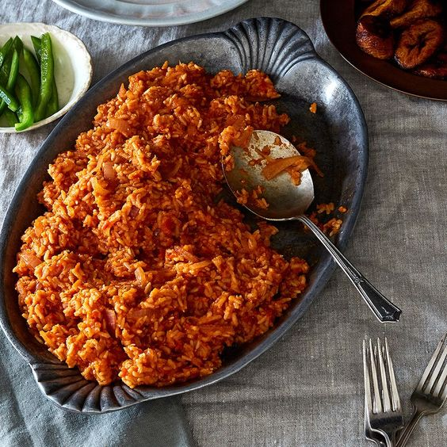

Jollof Rice Recipes

Description
Just as rice is a staple in many Asian and Latin American countries, it is
in Nigeria, too. Jollof rice, at its core, is rice cooked with tomato,
onion, pepper, and spices.
This ubiquitous dish is present on both special occasions and regular
meals. Not only is this dish popular in Nigeria, but in other African
countries as well, such as Ghana.
Ingredients
Produce
- 2 Bay leaves, dried
- 6 Plum/roma tomatoes, medium-sized fresh
- 6 Poblano peppers, fresh red
- 3 Red onions, medium-sized
- 1 tsp Thyme, dried
Canned Goods
- 5 cups Stock
- 3 tbsp Tomato paste
Baking and Spices
- 1 Black and white pepper
- 1 salt
Oil and Vinegars
Dairy
Others
- 2 teaspoons (Caribbean/Jamaican-style) curry powder
-
4 cups Uncooked converted long-grain rice or golden sella basmati,rinsed
Steps or Instructions
-
In a blender, combine tomatoes, red poblano (or bell) peppers, chopped
onions, and Scotch bonnets with 2 cups of stock, blend till smooth,
about a minute or two. You should have roughly 6 cups of blended mix.
Pour into a large pot/ pan and bring to the boil then turn down and let
simmer, partly covered for 10 - 12 minutes
-
In a large pan, heat oil and add the sliced onions. Season with a pinch
of salt, stir-fry for 2 to 3 minutes, then add the bay leaves, curry
powder and dried thyme and a pinch of black pepper for 3 - 4 minutes on
medium heat. Then add the tomato paste - stir for another 2 minutes. Add
the reduced tomato-pepper-Scotch bonnet mixture, stir, and set on medium
heat for 10 to 12 minutes till reduced by half, with the lid partly on.
This is the stew that will define the pot.
-
Add 4 cups of the stock to the cooked tomato sauce and bring it to boil
for 1 - 2 minutes.
-
Add the rinsed rice and butter, stir, cover with a double piece of
foil/baking or parchment paper and put a lid on the pan—this will seal
in the steam and lock in the flavor. Turn down the heat and cook on the
lowest possible heat for 30 minutes, stirring half way through.
-
Stir rice—taste and adjust as required. If rice isn't soft enough/ needs
additional cooking, add 1/4 to 1/2 cup of stock or water, stir through
and continue to steam, on low till cooked through.
-
If you like, add sliced onions, fresh tomatoes and the 2nd teaspoon of
butter and stir through. Let rest, covered for 5 to 6 minutes.
-
To make Party Rice, you'll need one more step. Now Party Rice is
essentially Smoky Jollof Rice, traditionally cooked over an open fire.
However, you can achieve the same results on the stove top. Here's how:
Once the rice is cooked, turn up the heat with the lid on and leave to
"burn" for 3 to 5 minutes. You'll hear the rice crackle and snap and it
will smell toasted. Turn off the heat and leave with the lid on to
"rest" till ready to serve. The longer the lid stays on, the smokier.
Let the party begin!